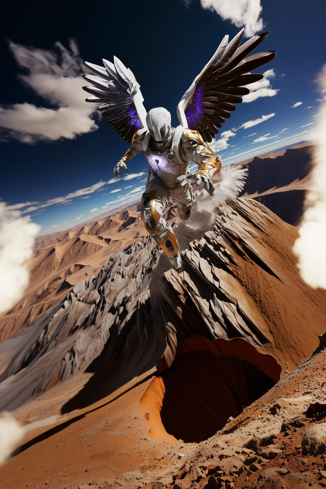

©
©

Ner
Luminary Vanguard · Recruit
On a scorched plateau where nothing else grows, Ner cultivates flowers made of fire. Every petal of the Flare Bloom took a season of solitude to master, and every one of them still burns. Ner has never seen the Beacon lit, but trains each day as if tonight will be the night.